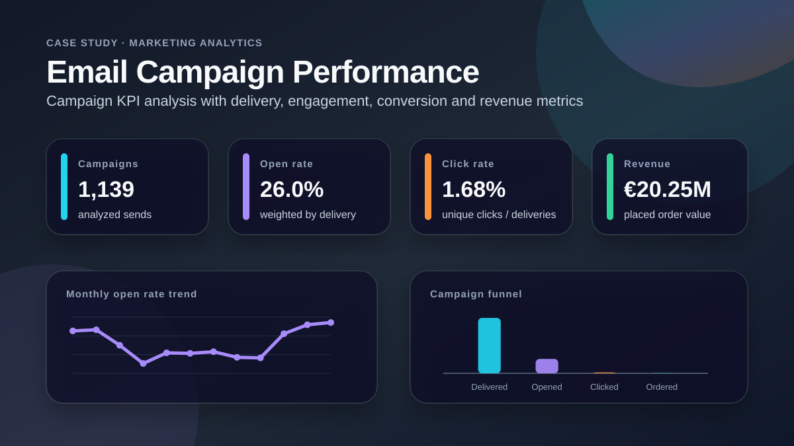
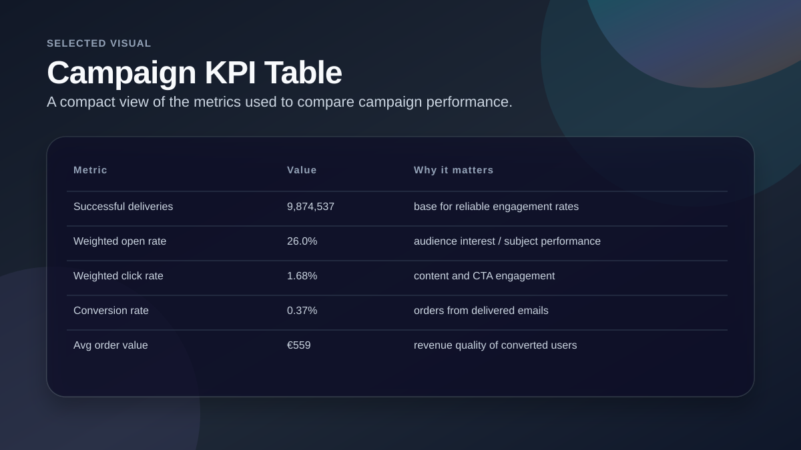
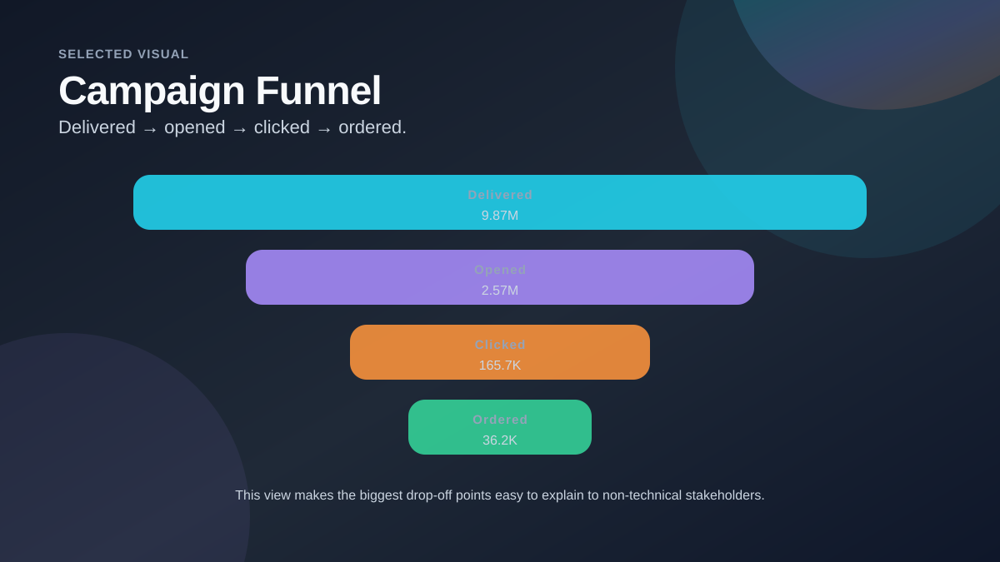
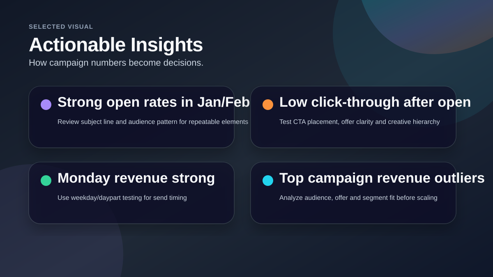

Email Campaign Performance Analysis
A marketing analytics case study analyzing campaign delivery, engagement, conversion and revenue metrics to identify stronger patterns and improvement opportunities.

Project Snapshot
Business Question
The task was to evaluate campaign performance and identify which sends, time periods and engagement metrics were contributing to stronger or weaker results.
My Analytical Approach
- Reviewed campaign-level email data across delivery, opens, clicks, orders and revenue.
- Calculated weighted KPI rates using successful deliveries as the base.
- Compared performance by month and day of week.
- Ranked campaigns by revenue and engagement metrics.
- Prepared a dashboard-style summary with action-oriented insights.
Selected Visuals from the Analysis

Campaign KPI Table
Shows the main metrics used to evaluate performance: delivery, open rate, click rate, conversion rate and average order value.

Campaign Funnel
A funnel makes the largest drop-off points easy to understand at a glance.

Actionable Insights
Summarizes how the analysis can inform A/B tests, CTA improvements and send-time decisions.
Key Findings
Engagement benchmark
Across the dataset, the weighted open rate was approximately 26.0% and the weighted click rate was approximately 1.68%.
Revenue concentration
A small number of campaigns had much stronger revenue performance and should be reviewed for repeatable patterns.
Optimization opportunity
The biggest practical opportunity was not only getting opens, but improving the click and conversion path after the open.
Recommendations / Outcome
Test CTA and offer clarity
Use A/B testing on creative hierarchy, CTA wording and offer framing to improve click-through.
Review top campaigns
Compare the highest-revenue campaigns by audience, content, send day and offer type.
Track funnel movement
Monitor delivery → open → click → order to identify where each campaign loses momentum.